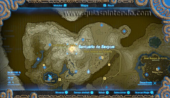
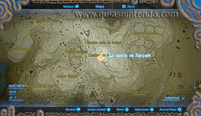
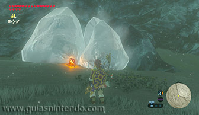
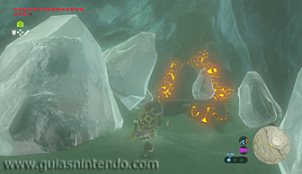
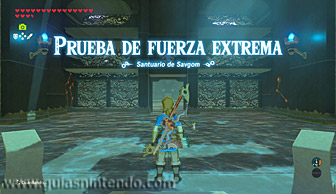
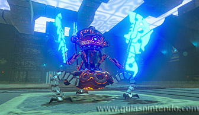
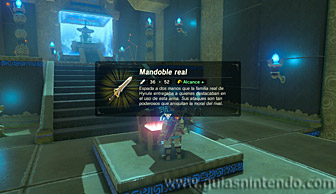

Se encuentra en la región de la torre de Hebra, en la cordillera de Hebra, al pie de la cara oeste de la cumbre de Hebra.

El santuario se encuentra bloqueado por hielo, por lo que primero deberás derretirlo. Si bien puedes usar flechas de fuego o armas con el elemento fuego, lo más fácil es encender una hoguera dejando un montón de leña y un pedernal en el suelo y golpeando este último con un arma metálica para encender la madera.

Dentro del santuario debes derrotar a un miniguardián 4.0: uno de los dos miniguardianes más poderosos de los que vas a encontrar en los santuarios de esta región.

Después de derrotarlo dirígete al altar y en el camino podrás abrir un cofre que contiene un mandoble real. Cuando llegues al altar podrás examinarlo para obtener un símbolo de valía.
